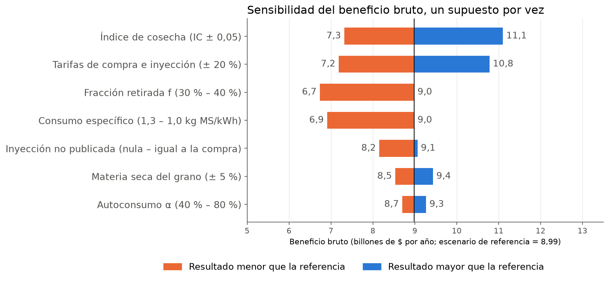

Sistema de información para estimar el potencial eléctrico y económico de la biomasa residual agrícola de la Argentina a escala departamental
¿Cuánto rastrojo deja cada departamento, cuánta electricidad podría generar y cuánto valdría esa electricidad?
¿Pueden obtenerse automáticamente y con trazabilidad la producción y las tarifas de las 28 distribuidoras principales?
¿Cuál es el orden del potencial técnico y cómo se distribuye en el territorio?
¿Qué supuestos dominan la incertidumbre del resultado?
| Trabajo | Resolución | Actualización | Valorización |
|---|---|---|---|
| WISDOM Argentina (FAO, 2009, 2020) | Grilla y departamento | Puntual | No |
| Scarlat et al. (2010), Unión Europea | Regional | Puntual | No |
| Lopez et al. (2012), Estados Unidos | Condado | Puntual | No |
| IRENA (2023), Sudamérica | Regional (país en gráficos) | Puntual | No |
| Este trabajo | Departamento × cultivo × campaña | Programada (periodicidad no demostrada) | Tarifas reales |
Residuo = P · (1 − IC)/IC en materia seca (Hay, 1995), con una fracción retirable.
WISDOM considera no disponibles la mayoría de los rastrojos, por la siembra directa.
65 % de las líneas actuales escritas con un asistente; la supervisión del autor no quedó documentada de manera sistemática.
| Decisión | Elegida | Alternativas | Criterio y evidencia |
|---|---|---|---|
| Almacenamiento | Parquet + DuckDB | PostgreSQL · SQLite · CSV | 8,3 MB frente a 46 MB en CSV; lectura en 0,02 s frente a 0,57 s (medido solo frente a CSV) |
| Planificación | cron (Ofelia) | Airflow · Dagster · Prefect | Un flujo lineal semanal no justifica cuatro servicios con base de metadatos |
| Proxy inverso | Caddy | Nginx + Certbot · Traefik | HTTPS automático por defecto, configuración mínima |
| Tablero | Streamlit | Dash · Grafana · Superset | Mismo lenguaje y lógica que el ETL |
| Datos | raw · reference · processed · audit | Carpeta única · esquemas en BD | Reprocesar, versionar solo la referencia, separar auditoría |
| Cuadros PDF | Texto + parser por puntaje | Tabula · Camelot · pdfplumber | Un método para PDF, planillas y web |
Costo reconocido: Ofelia requiere el socket de Docker; un cron dentro de la imagen sería preferible.
Firma binaria, umbral de 5 %, espera exponencial y última descarga válida.
Santa Cruz (enlaces rotos), Tierra del Fuego y Tucumán (escaneados).
18 distribuidoras intervienen; solo EDET sin dato: 99,3 % de la energía con tarifa extraída.
Documento, SHA‑256, vigencia, fila leída y estado de cada valor.
De octubre de 2025 a noviembre de 2026, sin indexar.
Precios reales y categorías no homogéneas.
Beneficio real entre 33 % menor y 4 % mayor.
MAGyP · BCCBA
t de materia seca
referencia (0,3–0,4)
ficha del PP30
Tc compra · Ti inyección
3,86 GWh/año → ≈ 25 equipos → ≈ $504 millones/año brutos. Codificado como prueba.
«SD» no es cero; elegir la mayor producción suma un sesgo al alza de +2,8 % (Córdoba +5,3 %, La Pampa +11,8 %).
Invariantes que impiden publicar · alertas · avisos solo de alertas nuevas
| Error detectado | Impacto |
|---|---|
| Tarifa mayorista leída como minorista | −15 % en EDEN |
| «Hasta 800 kWh» leído como precio | Tarifa ≈ 7 veces mayor |
| Consumo sobre material húmedo | Energía +3,2 % |
| Producción repetida en Córdoba | ×2 o ×4 por registro |
| «SD» convertido en 0 | Subestimación |
Diffie‑Hellman → clave de host verificada → firma Ed25519 del usuario → canal cifrado; puerto 22 aún abierto.
Corridas de 28–44 min en entorno local; la ejecución semanal aún no se observó.
| Supuesto | Opciones del panel | Valor por defecto |
|---|---|---|
| Autoconsumo | 0 – 100 % | 60 % |
| Inyección no publicada | Conservador · central · alto | Central (compra × 0,913) |
| Consumo específico | 1,0 o 1,1 kg/kWh (1,3 solo en el análisis) | 1,0 |
| Fracción retirada | 20 – 70 % | 40 % (cota superior del rango citado) |
Seis páginas: inicio, resumen, energía, dinero, exploración y auditoría de descartes, discrepancias y alertas.
| Simulación (percentiles 5–95) | Energía (TWh/año) | Valor bruto (billones $/año) |
|---|---|---|
| Retiro 30–40 % (tope: Nunes et al., 2021) | 40 – 61 (mediana 49) | 4,8 – 8,8 |
| Retiro 10–40 % (con restricción por siembra directa) | 16 – 57 (mediana 35) | 2,1 – 7,9 |
| Escenario de referencia (40 %, cota superior del rango citado) | 64,1 | 9,0 |
332 departamentos de 15 provincias · supone que el equipo rinde con rastrojo densificado como con combustibles aprobados · pesos corrientes, sin costos · demanda del MEM 2022: 138,8 TWh · billón = 10¹²
| Departamento | TWh/año |
|---|---|
| Río Cuarto (Córdoba) | 2,33 |
| General López (Santa Fe) | 1,90 |
| Marcos Juárez (Córdoba) | 1,89 |
| Unión (Córdoba) | 1,81 |
| General Roca (Córdoba) | 1,68 |
| San Justo (Córdoba) | 1,66 |
| Presidente Roque Sáenz Peña (Córdoba) | 1,21 |
| Juárez Celman (Córdoba) | 1,07 |
| Moreno (Santiago del Estero) | 0,99 |
| Castellanos (Santa Fe) | 0,98 |
Orden estable en el Monte Carlo (correlación de rangos ≥ 0,999, con errores independientes por cultivo) y con la regla de reconciliación alternativa (9 de los 10 principales se mantienen; Río Cuarto baja a 1,97).

WISDOM trata la mayoría de estos rastrojos como no disponibles por la siembra directa: refuerza el escenario prudente.
≈ 72 GJ/ha frente a 50–100 GJ/ha de IRENA (2023): descarta errores de escala, no valida.
| Objetivo específico | Indicador |
|---|---|
| Extracción agrícola automática | Sin intervención manual y con respaldo ante caídas |
| Extracción tarifaria trazable | Distribuidoras leídas y energía valorizada (criterio: ≥ 90 %) |
| Modelo lineal y auditable | Cada parámetro con fuente o declarado como supuesto; sensibilidad |
| Calidad del software y los datos | Pruebas en integración continua, cobertura, invariantes |
| Infraestructura en contenedores | Ejecución periódica documentada |
| Tablero con supuestos ajustables | Recálculo de escenarios sin reejecutar el ETL |
| Estado del arte | Trabajos comparables sistematizados |
| Objetivo | Estado |
|---|---|
| Estado del arte | Parcial (búsqueda no sistemática) |
| Extracción agrícola | Cumplido |
| Extracción tarifaria | Parcial (25 de 28) |
| Modelo de cálculo | Con limitaciones |
| Calidad | Con limitaciones |
| Infraestructura | No cumplido (indicador) |
| Tablero | Cumplido |
La extracción ocupa la mitad del código del ETL.
Números verosímiles y equivocados: contrastar y convertir en prueba.
Decisiones con identificador, documentos con hash, descartes visibles.
Un sistema de información trazable, cuyas cifras se recalculan desde el repositorio con una corrida del ETL; su operación periódica y su validación externa son los próximos pasos.
Preguntas · Marco Ferro · OPTIMIA‑HV
| Pregunta | Respuesta breve |
|---|---|
| ¿Por qué 40 % y no 50 %? | Nunes et al. (2021): hasta 40 % con rendimientos de maíz mayores a 11 t/ha; con rendimientos argentinos, 40 % es la cota superior del rango citado (Nunes implica 30–35 %) y 30 % el escenario prudente; 50 % no tiene respaldo. |
| ¿Cómo se validó? | Pruebas sobre documentos reales, invariantes, ejemplo trazable automatizado y orden de magnitud; sin referencia nacional comparable. |
| ¿Cuánto hizo la IA? | 65 % de las líneas actuales (subestimado), con supervisión no documentada sistemáticamente; supuestos, decisiones y validación del autor. |
| ¿Por qué no Airflow? | Un flujo lineal semanal; Airflow suma planificador, procesador, API y base de metadatos. |
| ¿Es seguro el servidor? | El acceso usa clave pública y TLS, pero la contraseña del superusuario sigue habilitada y hay otros riesgos pendientes declarados: socket de Docker en el planificador y puerto 22 abierto. ETL sin privilegios, puerto local y versión fija ya se corrigieron. |
| ¿Es rentable? | No se evaluó: es beneficio bruto. La evaluación económica es el siguiente paso. |
Simple, pero la CI tenía una clave con acceso general.
Desplegaba aunque la CI fallara.
Correcto, pero una plataforma completa para pocas actualizaciones.
Sin revisión humana obligatoria. Despliegue continuo revertido el 27/10 (commit 63cbb88, que restablece el árbol de a31c418).